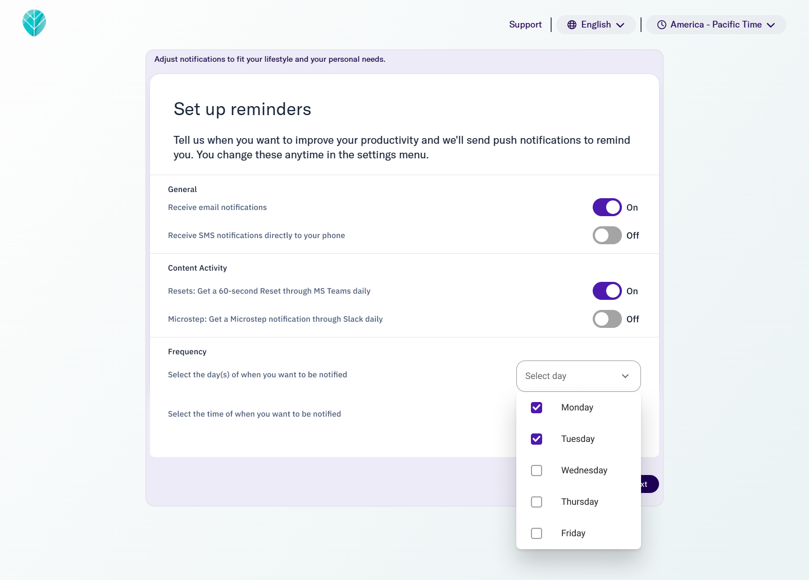
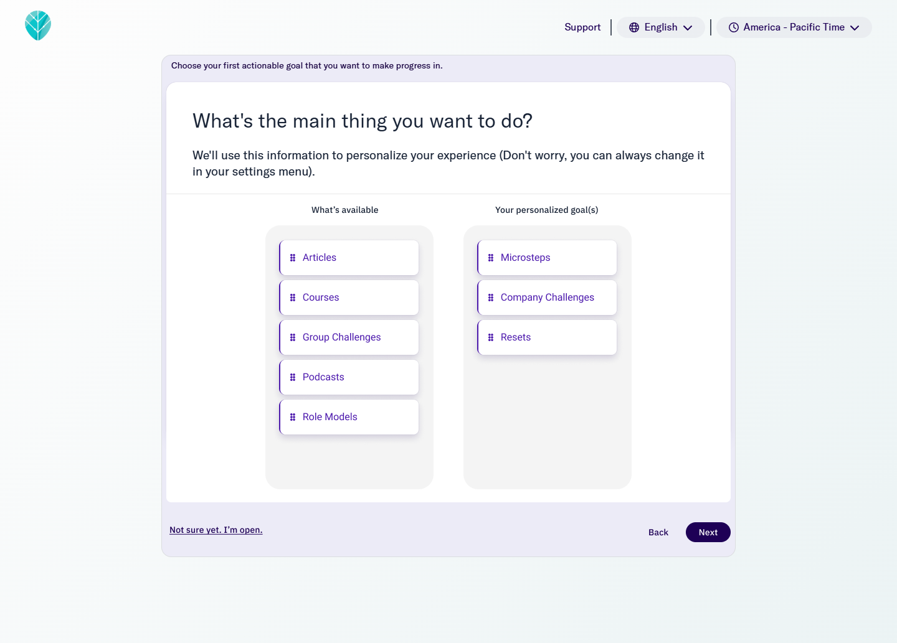
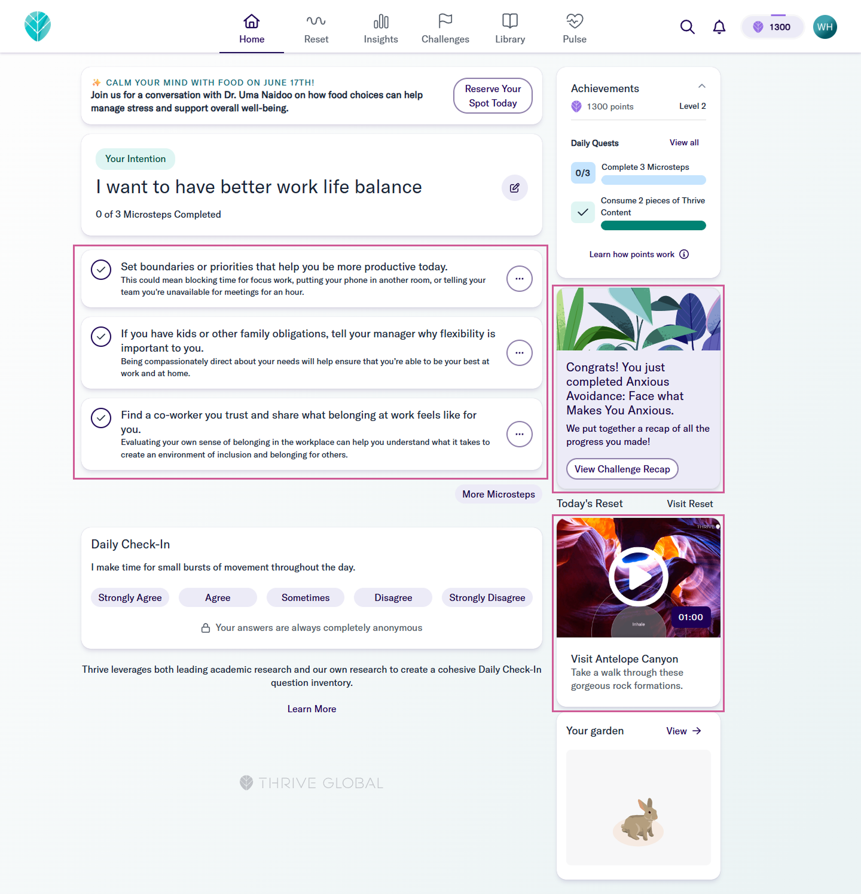
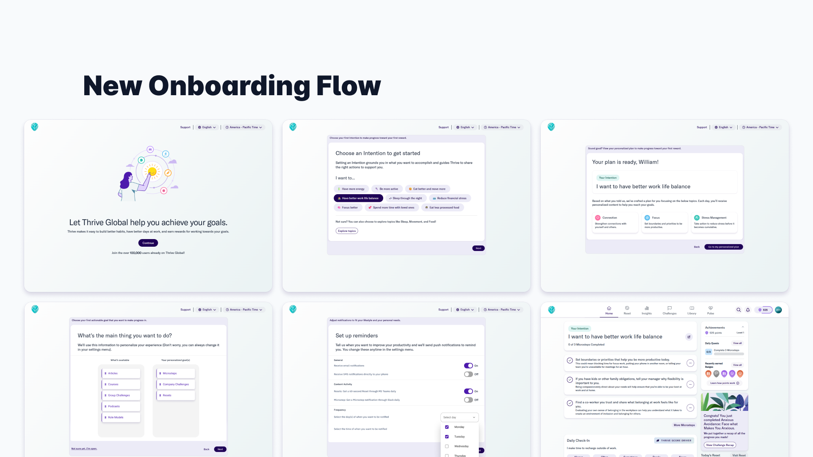

🧭 Why are we here?
Thrive Global is a B2B SaaS platform that helps organizations support employee well-being through personalized behavior change programs. As the company expanded partnerships with large enterprise clients, we noticed that user retention in the first 30 days had dropped; making it harder to drive widespread use and sustained engagement.
To address this, we focused on reimagining the onboarding experience, with the goal of building a stronger foundation for long-term product success.

🚩 What are we trying to solve?
The onboarding flow was overloaded with information and lacked personalization, causing users to:
This led to fewer users building healthy habits or discovering the full value of Thrive.
🔍 How do we know it’s a problem?
Through a combination of product analytics, user research, and enterprise client feedback, we uncovered:
We also heard from HR leaders that employees often disengaged early because onboarding felt “like another corporate task” rather than a supportive experience.
As the design systems lead, I owned the effort to lay a strong foundation that would improve collaboration, efficiency, and user experience across teams. This will help start building the right Lego set for Thrive.
Key responsibilities included:
💡 What’s the suggested solution?
We streamlined and personalized the onboarding experience, introducing:




All of this was built with design system tokens and components, ensuring consistency and future adaptability for B2B partners.
Quantitative
Qualitative
🧠 Why do we believe it will work?
Behavior change is deeply personal. By giving users more control up front, helping them prioritize what’s meaningful and set healthy boundaries around engagement, we designed an onboarding experience that feels respectful, relevant, and supportive, not prescriptive.
From early signals and user interviews, we believe this approach not only reduces friction but builds trust. It paves the way for deeper adoption of Thrive’s behavior change tools long term.
